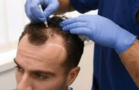

Saç ekimi hakkında en çok merak edilenler nelerdir?
Saç dökülmesi ile alakalı sıkça sorulan sorular içinde en çok; operasyonun ne kadar süreceği yer almaktadır. Saç ekimi operasyonlarının süresi alınan kök sayısına ve uygulanan tekniğe bağlı olarak değişiklik gösterebilmektedir. Ortalama bir saç ekimi operasyonunu temel alarak; saç ekim operasyonlarının altı ile sekiz saat arasında değişim gösterdiğini söyleyebiliriz.
Saç ekimi işleminde kullanılan kökler nereden alınır?
Saç ekimi yapılacak alana yerleştirilen saç kökleri hastanın kendisine ait olan saç kökleridir. Kullanılan kökler genellikle hastanın ense bölgesinden alınır. Saç köklerinin alındığı yere donör bölge adı verilir. Ense bölgesinin yeterli olamadığı durumlarda göğüs ya da çene bölgesinin kök alınması mümkündür. Ancak ilk tercih öncelikle ense bölgesidir.
Saç ekimi işlemi için ne kadar saç kökü gereklidir?
Saç ekimi işlemlerinde ihtiyaç duyulan kök sayısı net değildir. Her saç ekimi operasyonu kişiye özeldir. Bu nedenle kök sayısı yapılacak saç ekimi muayenesi sonrasına belirlenmektedir.
